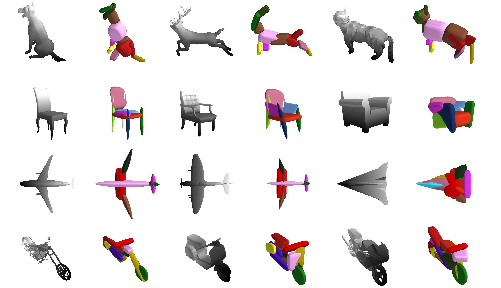
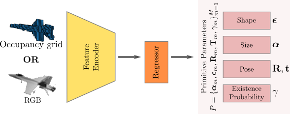
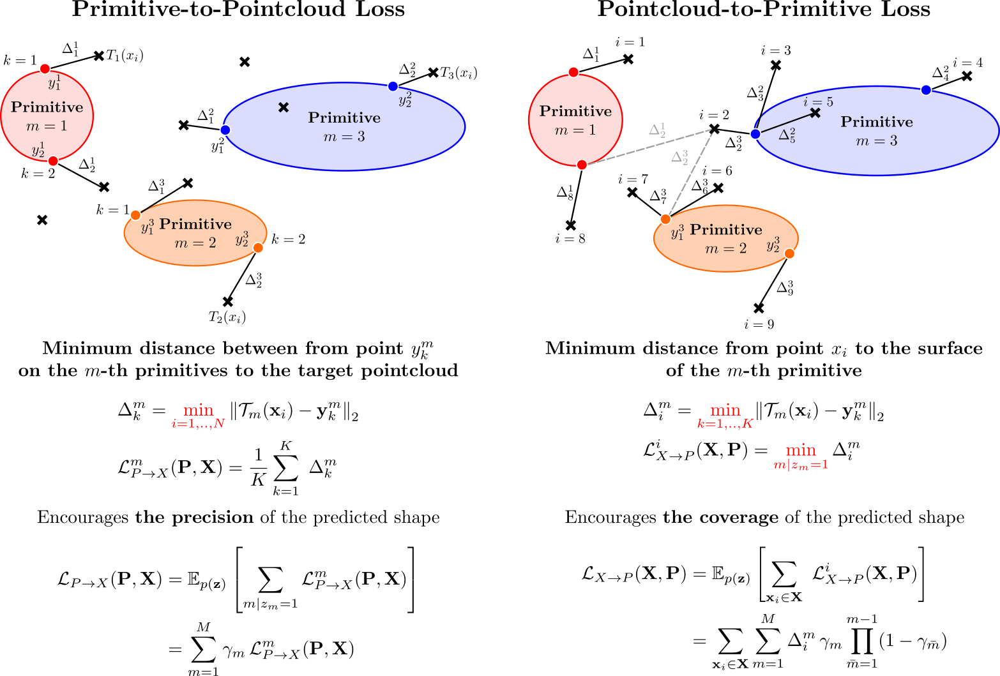
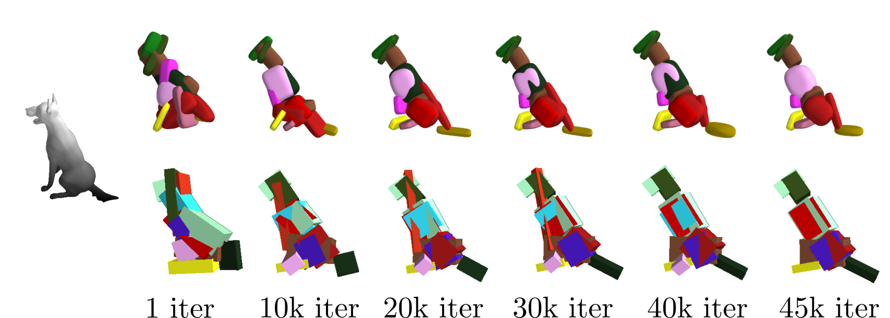
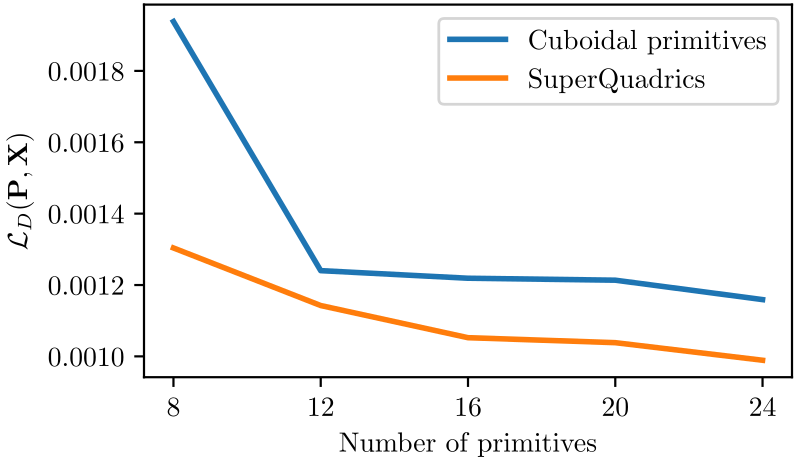
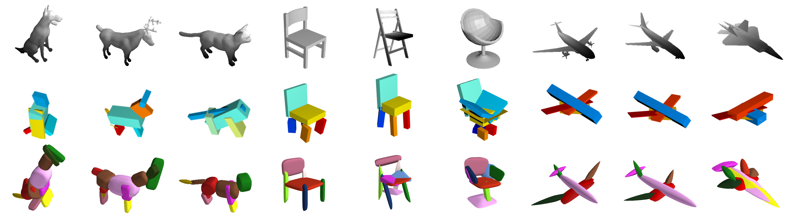
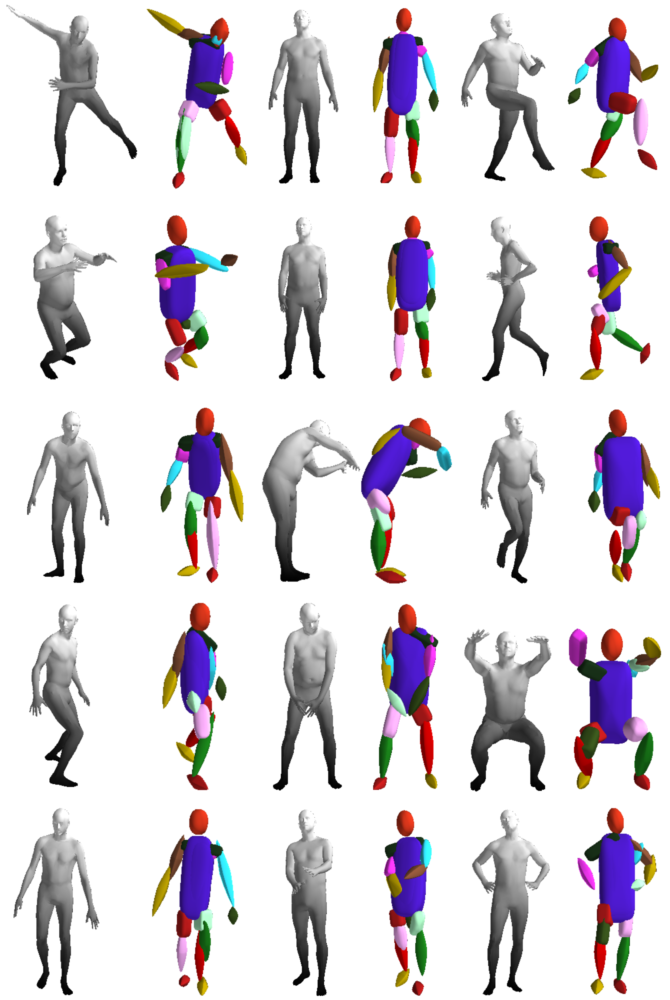

Superquadrics allow for
modeling fine details such as the tails and ears of animals as
well as the wings and the body of the airplanes and wheels
of the motorbikes which are hard to capture using cuboids
Abstracting complex 3D shapes with parsimonious part-based
representations has been a long standing goal in computer
vision. This paper presents a learning-based solution to this
problem which goes beyond the traditional 3D cuboid
representation by exploiting superquadrics as atomic elements.
We demonstrate that superquadrics lead to more expressive 3D
scene parses while being easier to learn than 3D cuboid
representations. Moreover, we provide an analytical solution to
the Chamfer loss which avoids the need for computational
expensive reinforcement learning or iterative prediction. Our
model learns to parse 3D objects into consistent superquadric
representations without supervision. Results on various
ShapeNet categories as well as the SURREAL human body dataset
demonstrate the flexibility of our model in capturing fine
details and complex poses that could not have been modelled
using cuboids.
Approach Overview
We propose a novel deep neural network that efficiently learns
to parse 3D objects into consistent superquadric
representations, without any part-level supervision,
conditioned on a 3D shape or 2D image as an input. In particular, our
network encodes the input image/shape into a low-dimensional primtive
representation \(\mathbf{P}=\{(\lambda_m, \gamma_m)\}_{m=1}^M\), where
\(M\) is an upper bound to the maximum number of primitives. For
each primitive our network regresses:
The primitive parameters \(\lambda_m\)
(2 for the shape, 3
for the size and 6 for the pose).
An existence probability \(\gamma_m\) that indicates
whether a particular primitive is part of the assembled
object.

We represent the target pointcloud as a set of 3D points
\(\mathbf{X}=\{\mathbf{x_i}\}_{i=1}^N\) and approximate
the surface of each primitive \(m\) using a set of points
\(\mathbf{Y}_m = \{\mathbf{y}_k^m\}_{k=1}^K\)
uniformly sampled on the surface of the primitive. To
train our network, we measure the discrepancy between
the target and the predicted shape. In particular, we
formulate our optimization objective as a bi-directional
reconstruction loss and incorporate a minimum description
length prior, which favors parsimony. In particular, our
overall loss is:
$$
\begin{equation*}
\mathcal{L}_{D}(\mathbf{P} , \mathbf{X}) =
\underbrace{\mathcal{L}_{P\rightarrow X}(\mathbf{P}, \mathbf{X})}_{
\substack{\text{Primitive-to-Pointcloud}}} +
\underbrace{\mathcal{L}_{X\rightarrow P}(\mathbf{X}, \mathbf{P})}_{
\substack{\text{Pointcloud-to-Primitive}}} +
\underbrace{\mathcal{L}_{\gamma}(\mathbf{P})}_{
\substack{\text{Parsimony}}}
\end{equation*}
$$

Are superquadrics better than cuboids?

We visualize the qualitative evolution of superquadrics (top)
and cuboids (bottom) during training. Superquadrics converge
faster to more accurate representations, whereas cuboids cannot
capture details such as the open mouth of the dog, even after
convergence. This is also validated quantitatively, where for
any given number of primitives superquadrics consistently
achieve a lower loss and hence a higher modeling fidelity.

Evaluation on ShapeNet
We evaluate the quality of the predicted primitives on the
ShapeNet dataset. We train a model per-object category using
maximally 20 primitives. We associate every primitive with a
unique color, thus primitives illustrated with the same color
correspond to the same object part.

We visualize predictions for the object categories animals,
aeroplane and chairs from the ShapeNet dataset. The top row
illustrates the ground-truth meshes from every object. The
middle row depicts the corresponding predictions using the
cuboidal primitives estimated by Tulsiani et
al. The bottom row shows the corresponding predictions
using our learned superquadric surfaces. We observe that
the predicted primitive representations are consistent
across instances. For example, the primitive depicted in
green describes the right wing of the aeroplane, while for
the animals class, the yellow primitive describes the front
legs of the animal.
Evaluation on SURREAL
Our network learns semantic mappings of body parts across
different body shapes and articulations.
The benefits of superquadrics over simpler shape
abstractions are accentuated in this dataset due to the
complicated shapes of the human body. Our model predicts
pointy octahedral shapes for the feet, ellipsoid shapes for
the head and a flattened elongated superellipsoid for the
main body without any supervision on the primitive
parameters. Another interesting aspect of our model is the
consistency of the predicted primitives, i.e., the same
primitives (highlighted with the same color) consistently
represent feet, legs, arms etc. across different pose.

Acknowledgements
We thank Michael Black for early discussions on superquadrics.
This research was supported by the Max Planck ETH Center for
Learning Systems.